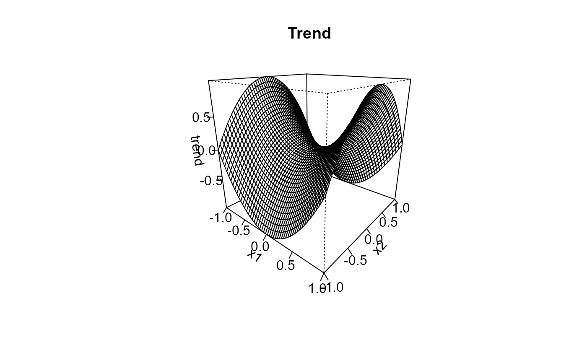
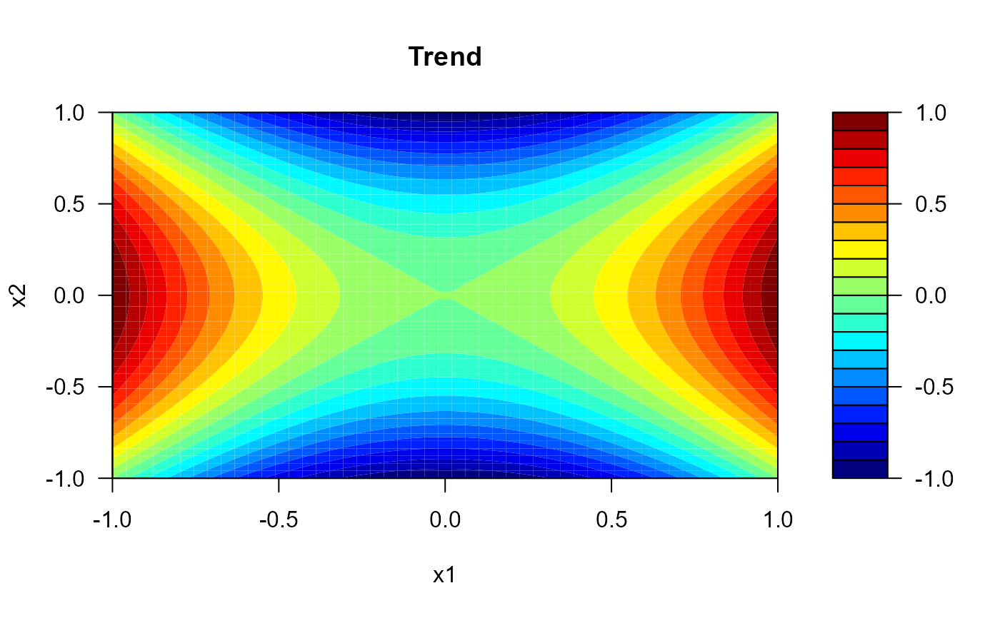
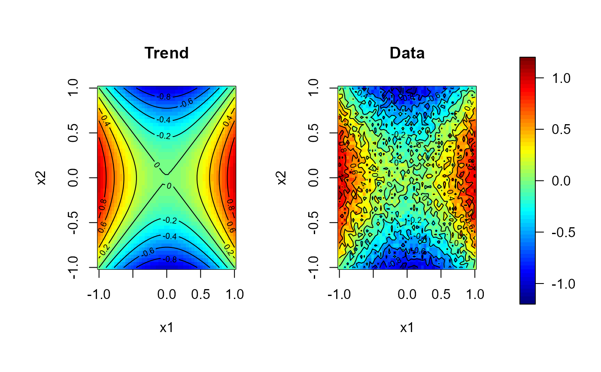

Draw an image, perspective, contour or filled contour plot for data
on a bidimensional regular grid (S3 methods for class "data.grid").
a "data.grid"-class object.
integer (or character) with the index (or name) of the component containing the values to be used for coloring the rectangles.
label for the x axis, defaults to dimnames(x)[1].
label for the y axis, defaults to dimnames(x)[2].
additional graphical parameters (to be passed to main plot function).
label for the z axis, defaults to names(x)[data.ind].
logical; if FALSE (default), function contour
is called, otherwise filled.contour.
# Regularly spaced 2D data
grid <- grid.par(n = c(50, 50), min = c(-1, -1), max = c(1, 1))
f2d <- function(x) x[1]^2 - x[2]^2
trend <- apply(coords(grid), 1, f2d)
set.seed(1)
y <- trend + rnorm(prod(dim(grid)), 0, 0.1)
gdata <- data.grid(trend = trend, y = y, grid = grid)
# perspective plot
persp(gdata, main = 'Trend', theta = 40, phi = 20, ticktype = "detailed")

# filled contour plot
contour(gdata, main = 'Trend', filled = TRUE, color.palette = jet.colors)

# Multiple plots with a common legend:
scale.range <- c(-1.2, 1.2)
scale.color <- jet.colors(64)
# 1x2 plot with some room for the legend...
old.par <- par(mfrow = c(1,2), omd = c(0.05, 0.85, 0.05, 0.95))
image(gdata, zlim = scale.range, main = 'Trend', col = scale.color)
contour(gdata, add = TRUE)
image(gdata, 'y', zlim = scale.range, main = 'Data', col = scale.color)
contour(gdata, 'y', add = TRUE)
par(old.par)
# the legend can be added to any plot...
splot(slim = scale.range, col = scale.color, add = TRUE)
